dataset_comparison <- tibble::tibble(
Dataset = c("EDGAR", "ODIAC", "FFDAS", "CDIAC-FF"),
Main_Focus = c(
"Global GHG & air pollutants",
"Fossil fuel CO2 (global)",
"Fossil fuel CO2 (global)",
"Fossil fuel CO2 (global & national)"
),
Methodology = c(
"IPCC-based inventory using international statistics",
"Downscaling using nightlight data + point sources",
"Data assimilation (Kaya identity + observations)",
"Energy statistics-based (fuel consumption & cement production)"
),
Spatial_Resolution = c(
"~0.1° (~10 km)",
"~1 km",
"~0.25°",
"National / coarse"
),
Temporal_Coverage = c(
"1970–present",
"~2000–present",
"1997–2015 (updates ongoing)",
"1751–recent"
),
Key_Strength = c(
"Consistent global coverage",
"High spatial resolution",
"Incorporates uncertainty",
"Longest historical record"
)
)12 High-Resolution Carbon Emissions Using the Vulcan Dataset
12.1 Overview / Purpose
This chapter introduces the Vulcan Project, a high-resolution, bottom-up dataset of fossil fuel CO2 emissions across the United States. The purpose of this chapter is to help students understand how anthropogenic carbon emissions are structured, quantified, visualized, and interpreted across space, time, and sector.
To support comparison and broader context, this chapter also introduces the EDGAR emissions dataset. Together, these datasets provide an opportunity to explore differences in spatial resolution, geographic extent, and emissions structure while building practical skills in handling raster and NetCDF data in R.
12.2 Learning Objectives
After completing this chapter, students will be able to:
- Define the Vulcan carbon emissions dataset and its purpose
- Explain how fossil fuel CO₂ emissions are quantified and categorized
- Describe spatial and temporal resolution in emissions datasets
- Identify major emission sectors (transportation, industry, residential, electricity)
Load and explore large geospatial datasets (e.g., NetCDF or raster formats):
- Aggregate emissions across sectors, space, and time
- Visualize emissions using maps and plots
- Interpret spatial and temporal emission patterns
12.3 What is Vulcan?
For more information, visit: Vulcan Project Website.
The Vulcan Project is a high-resolution effort to quantify fossil fuel carbon dioxide (CO₂) emissions across the United States in both space and time. Unlike coarser global inventories, Vulcan disaggregates emissions by sector, including power generation, industrial activity, transportation, and residential and commercial sources, and maps them onto a fine spatial grid (e.g., ~10 km). This detailed framework allows for a more precise representation of where and when emissions occur, capturing daily (diurnal) cycles and spatial heterogeneity associated with urban centers, industrial regions, and transportation networks.
When coupled with atmospheric transport models, Vulcan data can also be used to simulate how CO₂ disperses through the atmosphere, providing insights into emission patterns, boundary layer dynamics, and regional transport processes. As illustrated in the accompanying video, these capabilities make Vulcan a valuable tool for linking emission inventories with observed atmospheric concentrations and for improving climate and air quality analyses.
12.4 Global Fossil Fuel CO₂ Emission Datasets
The Emissions Database for Global Atmospheric Research (EDGAR) is one of the most widely used global inventories of anthropogenic greenhouse gas (GHG) and air pollutant emissions. Developed by the European Commission’s Joint Research Centre, EDGAR provides independent emission estimates using consistent IPCC-based methodologies and international statistical data.
For more information visit: EDGAR dataset
It offers long-term time series from 1970 to the present, with outputs available as national totals and global gridded maps at 0.1° × 0.1° spatial resolution. In addition, EDGAR includes detailed sectoral information and temporal resolution, making it a key resource for both scientific research and policy-relevant climate analyses. In addition to EDGAR, several other emission datasets have been developed with different methodological approaches and objectives. A brief comparison of these products is provided in Table X.
knitr::kable(
dataset_comparison,
col.names = c(
"Dataset",
"Main Focus",
"Methodology",
"Spatial Resolution",
"Temporal Coverage",
"Key Strength"
),
booktabs = TRUE
)| Dataset | Main Focus | Methodology | Spatial Resolution | Temporal Coverage | Key Strength |
|---|---|---|---|---|---|
| EDGAR | Global GHG & air pollutants | IPCC-based inventory using international statistics | ~0.1° (~10 km) | 1970–present | Consistent global coverage |
| ODIAC | Fossil fuel CO2 (global) | Downscaling using nightlight data + point sources | ~1 km | ~2000–present | High spatial resolution |
| FFDAS | Fossil fuel CO2 (global) | Data assimilation (Kaya identity + observations) | ~0.25° | 1997–2015 (updates ongoing) | Incorporates uncertainty |
| CDIAC-FF | Fossil fuel CO2 (global & national) | Energy statistics-based (fuel consumption & cement production) | National / coarse | 1751–recent | Longest historical record |
These datasets are complementary, differing in their spatial detail, temporal extent, and methodological frameworks. The choice among them depends on the specific research objective, such as long-term trend analysis, high-resolution spatial mapping, or uncertainty-aware modeling.
12.5 How Vulcan Estimates Emissions: Data Sources and Methodology
The Vulcan dataset is built using a bottom-up, data-integrated approach that combines multiple observational and statistical data sources to estimate fossil fuel CO₂ (FFCO₂) emissions across the United States. Rather than relying on aggregated national statistics alone, Vulcan compiles detailed sector-specific datasets and distributes emissions in both space and time using scientifically informed methods.
12.6 Bottom-Up Framework
At its core, Vulcan follows a bottom-up methodology, where emissions are estimated based on activity data (e.g., fuel consumption, traffic volume, industrial output) and emission factors (i.e., the amount of CO₂ emitted per unit of activity). This approach allows emissions to be linked directly to real-world processes such as electricity generation, transportation, and building energy use.
12.6.1 Table 1: Emissions sectors and distributions
emissions_table <- tibble::tibble(
Sector = c("Electricity production","Onroad","Residential","Nonroad"),
Emissions_Data_Source = c("EPA + DOE","EMFAC","EPA","EPA"),
Original_Resolution = c("Lat/lon","County","County","County"),
Final_Spatial = c("Lat/Lon","Road network","Census block","Surrogates"),
Final_Temporal = c("Hourly","Hourly","Hourly","Hourly")
)
knitr::kable(emissions_table, booktabs = TRUE)| Sector | Emissions_Data_Source | Original_Resolution | Final_Spatial | Final_Temporal |
|---|---|---|---|---|
| Electricity production | EPA + DOE | Lat/lon | Lat/Lon | Hourly |
| Onroad | EMFAC | County | Road network | Hourly |
| Residential | EPA | County | Census block | Hourly |
| Nonroad | EPA | County | Surrogates | Hourly |
12.6.2 Table 2: Comparison of emissions datasets
dataset_comparison <- tibble::tibble(
Dataset = c("EDGAR", "ODIAC", "FFDAS", "CDIAC-FF"),
Main_Focus = c(
"Global GHG & air pollutants",
"Fossil fuel CO2 (global)",
"Fossil fuel CO2 (global)",
"Fossil fuel CO2 (global & national)"
),
Methodology = c(
"IPCC-based inventory using international statistics",
"Downscaling using nightlight data + point sources",
"Data assimilation (Kaya identity + observations)",
"Energy statistics-based (fuel consumption & cement production)"
),
Spatial_Resolution = c(
"~0.1° (~10 km)",
"~1 km",
"~0.25°",
"National / coarse"
),
Temporal_Coverage = c(
"1970–present",
"~2000–present",
"1997–2015 (updates ongoing)",
"1751–recent"
),
Key_Strength = c(
"Consistent global coverage with detailed sectoral and temporal data",
"Very high spatial resolution, strong urban representation",
"Incorporates uncertainty and multiple data constraints",
"Longest historical time series of emissions"
)
)12.6.3 Table 1 Overview of data sources used in generating the space/time-resolved Vulcan v4.0 FFCO2 emissions (footnotes provide acronym explanations).
12.6.3.0.1 Gurney, K. R., Dass, P., Kato, A., Gawuc, L., Aslam, B., & Sun, H. (2025). Vulcan version 4.0 high-resolution annual carbon dioxide emissions in the US for the 2010–2022 time period. Scientific Data, 12(1), 1946.
12.7 EDGAR industrial CO2 NetCDF (global, 2021)
The dataset integrates information from major U.S. agencies, including:
- Environmental Protection Agency (EPA)
- Department of Energy / Energy Information Administration (EIA)
- Federal Highway Administration (FHWA)
- U.S. Census Bureau
- Federal Emergency Management Agency (FEMA)
By combining these sources, Vulcan produces consistent estimates of emissions across multiple sectors and fuel types (coal, oil/petroleum, and natural gas).
12.8 Point vs. Nonpoint Emissions
A key conceptual distinction in Vulcan is between point sources and nonpoint (area) sources:
Point sources are emissions from identifiable locations such as power plants, industrial facilities, and airports. These are often measured or reported directly and geolocated using latitude and longitude coordinates.
Nonpoint sources represent diffuse emissions spread across space, such as residential buildings, commercial energy use, and onroad transportation. These emissions are typically reported at aggregated levels (e.g., county scale) and must be spatially distributed using proxy data.
This distinction is important because it determines how emissions are processed and mapped.
12.9 Spatial Downscaling
Many input datasets are available only at coarse spatial scales (e.g., counties or states). Vulcan refines these into high-resolution maps using spatial proxies, including:
- Road networks and traffic data for onroad emissions
- Building floor area and energy use intensity for residential and commercial sectors
- Industrial facility locations for manufacturing emissions
- Shipping lanes and rail networks for transportation sectors
These proxies allow emissions to be distributed to fine spatial units such as U.S. Census blocks, and ultimately to a 1 km × 1 km grid, capturing detailed spatial variability across landscapes.
12.10 Temporal Downscaling
In addition to spatial detail, Vulcan provides high temporal resolution. While many emissions datasets are reported annually, Vulcan converts these into hourly estimates using temporal profiles and activity patterns.
Examples include:
- Hourly power plant emissions from continuous monitoring systems
- Traffic patterns to distribute onroad emissions throughout the day
- Building energy models to simulate hourly heating and cooling demand
Temporal scaling ensures that emissions reflect real-world variability, such as daily commuting cycles or seasonal energy demand.
12.11 Multi-Year Scaling and Consistency
To produce a consistent time series (2010–2022), Vulcan applies multi-year scaling techniques using energy consumption data from the EIA State Energy Data System (SEDS). This ensures that emissions trends remain consistent across years, even when underlying datasets are available only for specific time points.
Additional smoothing techniques are applied to reduce artificial jumps between reporting years, improving temporal continuity.
12.12 Sectoral Structure
Vulcan organizes emissions into major economic sectors, including:
- Electricity production
- Transportation (onroad, nonroad, rail, aviation, marine)
- Industrial processes
- Residential and commercial buildings
- Cement production
Each sector uses tailored data sources and processing methods, reflecting differences in how emissions are generated and reported.
12.13 Tools and Setup
This section introduces the computational workflow used to process, harmonize, and compare Vulcan and EDGAR emissions datasets. The workflow includes data loading, preprocessing, spatial alignment, visualization, and regional analysis.
12.13.1 Required Packages
The following R packages are used for raster processing, visualization, and spatial data handling:
library(terra)
library(ggplot2)
library(tigris)12.13.2 Define File Paths and Analysis Settings
Set the working directories and define the temporal range for analysis:
# Define analysis settings
vulcan_dir <- "TOT_CO2_USA_mosaic_grid_1km_mn_2021.tif_undefined"
edgar_dir <- "IND_emi_nc"
years_all <- 2010:2020
years_plot <- c(2010, 2015, 2020)These parameters control which files are loaded and which years are used for visualization.
12.13.3 Load and Standardize Emissions Data
12.13.3.1 Vulcan Dataset (Raster Stack)
vulcan_files <- list.files(
vulcan_dir,
pattern = "IND_.*\\.tif$",
full.names = TRUE,
recursive = TRUE
)
vulcan_stack <- rast(vulcan_files)vulcan_years_extracted <- as.numeric(gsub(".*_(20[0-9]{2})\\.tif$", "\\1", basename(vulcan_files)))
names(vulcan_stack) <- paste0("Vulcan_", vulcan_years_extracted)12.13.3.2 EDGAR Dataset (NetCDF Stack)
edgar_files <- list.files(
edgar_dir,
pattern = "\\.nc$",
full.names = TRUE
)
edgar_sel <- edgar_files[
grepl(paste(years_all, collapse = "|"), basename(edgar_files))
]
edgar_stack <- rast(edgar_sel)
edgar_years_extracted <- as.numeric(
gsub(".*(20[0-9]{2}).*", "\\1", basename(edgar_sel))
)
names(edgar_stack) <- paste0("EDGAR_", edgar_years_extracted)12.13.4 Coordinate Reference Systems and Units
12.13.4.1 Projection Check
crs(vulcan_stack)[1] "GEOGCRS[\"WGS 84\",\n ENSEMBLE[\"World Geodetic System 1984 ensemble\",\n MEMBER[\"World Geodetic System 1984 (Transit)\"],\n MEMBER[\"World Geodetic System 1984 (G730)\"],\n MEMBER[\"World Geodetic System 1984 (G873)\"],\n MEMBER[\"World Geodetic System 1984 (G1150)\"],\n MEMBER[\"World Geodetic System 1984 (G1674)\"],\n MEMBER[\"World Geodetic System 1984 (G1762)\"],\n MEMBER[\"World Geodetic System 1984 (G2139)\"],\n MEMBER[\"World Geodetic System 1984 (G2296)\"],\n ELLIPSOID[\"WGS 84\",6378137,298.257223563,\n LENGTHUNIT[\"metre\",1]],\n ENSEMBLEACCURACY[2.0]],\n PRIMEM[\"Greenwich\",0,\n ANGLEUNIT[\"degree\",0.0174532925199433]],\n CS[ellipsoidal,2],\n AXIS[\"geodetic latitude (Lat)\",north,\n ORDER[1],\n ANGLEUNIT[\"degree\",0.0174532925199433]],\n AXIS[\"geodetic longitude (Lon)\",east,\n ORDER[2],\n ANGLEUNIT[\"degree\",0.0174532925199433]],\n USAGE[\n SCOPE[\"Horizontal component of 3D system.\"],\n AREA[\"World.\"],\n BBOX[-90,-180,90,180]],\n ID[\"EPSG\",4326]]"crs(edgar_stack)[1] "GEOGCRS[\"WGS 84 (CRS84)\",\n DATUM[\"World Geodetic System 1984\",\n ELLIPSOID[\"WGS 84\",6378137,298.257223563,\n LENGTHUNIT[\"metre\",1]]],\n PRIMEM[\"Greenwich\",0,\n ANGLEUNIT[\"degree\",0.0174532925199433]],\n CS[ellipsoidal,2],\n AXIS[\"geodetic longitude (Lon)\",east,\n ORDER[1],\n ANGLEUNIT[\"degree\",0.0174532925199433]],\n AXIS[\"geodetic latitude (Lat)\",north,\n ORDER[2],\n ANGLEUNIT[\"degree\",0.0174532925199433]],\n USAGE[\n SCOPE[\"unknown\"],\n AREA[\"World\"],\n BBOX[-90,-180,90,180]],\n ID[\"OGC\",\"CRS84\"]]"Both datasets use the WGS 84 coordinate system, but differ slightly in axis ordering (EPSG:4326 vs. CRS84). While mathematically equivalent, this distinction requires careful handling during spatial operations.
12.13.4.2 Unit Comparison
terra::describe(edgar_stack) [1] "Driver: netCDF/Network Common Data Format"
[2] "Files: C:/Users/Scott/Documents/INF550-textbook-temp/INF550-textbook/IND_emi_nc/EDGAR_2025_GHG_CO2_2010_IND_emi.nc"
[3] "Size is 3600, 1800"
[4] "Origin = (-180.000000000000000,90.000000000000000)"
[5] "Pixel Size = (0.100000000000000,-0.100000000000000)"
[6] "Metadata:"
[7] " emissions#ChunkSizes={1,1800,3600}"
[8] " emissions#description=Combustion for manufacturing"
[9] " emissions#global_total=6.07Gt"
[10] " emissions#long_name=Combustion for manufacturing"
[11] " emissions#release=EDGAR_2025_GHG"
[12] " emissions#substance=CO2"
[13] " emissions#units=Tonnes"
[14] " emissions#year=2010"
[15] " emissions#_FillValue=nan"
[16] " lat#long_name=latitude"
[17] " lat#standard_name=latitude"
[18] " lat#units=degrees_north"
[19] " lon#long_name=longitude"
[20] " lon#standard_name=longitude"
[21] " lon#units=degrees_east"
[22] " NC_GLOBAL#contacts=https://edgar.jrc.ec.europa.eu/dataset_ghg2025#info JRC-EDGAR@ec.europa.eu"
[23] " NC_GLOBAL#copyright_notice=https://edgar.jrc.ec.europa.eu/dataset_ghg2025#conditions"
[24] " NC_GLOBAL#how_to_cite=https://edgar.jrc.ec.europa.eu/dataset_ghg2025#howtocite"
[25] " NC_GLOBAL#institution=European Commission, Joint Research Centre"
[26] " NC_GLOBAL#source=https://edgar.jrc.ec.europa.eu/dataset_ghg2025"
[27] "Corner Coordinates:"
[28] "Upper Left (-180.0000000, 90.0000000) "
[29] "Lower Left (-180.0000000, -90.0000000) "
[30] "Upper Right ( 180.0000000, 90.0000000) "
[31] "Lower Right ( 180.0000000, -90.0000000) "
[32] "Center ( -0.0000000, 0.0000000) "
[33] "Band 1 Block=3600x1 Type=Float32, ColorInterp=Undefined"
[34] " NoData Value=nan"
[35] " Unit Type: Tonnes"
[36] " Metadata:"
[37] " NETCDF_VARNAME=emissions"
[38] " _FillValue=nan"
[39] " global_total=6.07Gt"
[40] " substance=CO2"
[41] " year=2010"
[42] " units=Tonnes"
[43] " release=EDGAR_2025_GHG"
[44] " long_name=Combustion for manufacturing"
[45] " description=Combustion for manufacturing"
[46] " ChunkSizes={1,1800,3600}" terra::describe(vulcan_stack) [1] "Driver: GTiff/GeoTIFF"
[2] "Files: C:/Users/Scott/Documents/INF550-textbook-temp/INF550-textbook/TOT_CO2_USA_mosaic_grid_1km_mn_2021.tif_undefined/IND_CO2_USA_mosaic_grid_1km_mn_2010.tif"
[3] "Size is 5831, 2649"
[4] "Coordinate System is:"
[5] "GEOGCRS[\"WGS 84\","
[6] " ENSEMBLE[\"World Geodetic System 1984 ensemble\","
[7] " MEMBER[\"World Geodetic System 1984 (Transit)\"],"
[8] " MEMBER[\"World Geodetic System 1984 (G730)\"],"
[9] " MEMBER[\"World Geodetic System 1984 (G873)\"],"
[10] " MEMBER[\"World Geodetic System 1984 (G1150)\"],"
[11] " MEMBER[\"World Geodetic System 1984 (G1674)\"],"
[12] " MEMBER[\"World Geodetic System 1984 (G1762)\"],"
[13] " MEMBER[\"World Geodetic System 1984 (G2139)\"],"
[14] " MEMBER[\"World Geodetic System 1984 (G2296)\"],"
[15] " ELLIPSOID[\"WGS 84\",6378137,298.257223563,"
[16] " LENGTHUNIT[\"metre\",1]],"
[17] " ENSEMBLEACCURACY[2.0]],"
[18] " PRIMEM[\"Greenwich\",0,"
[19] " ANGLEUNIT[\"degree\",0.0174532925199433]],"
[20] " CS[ellipsoidal,2],"
[21] " AXIS[\"geodetic latitude (Lat)\",north,"
[22] " ORDER[1],"
[23] " ANGLEUNIT[\"degree\",0.0174532925199433]],"
[24] " AXIS[\"geodetic longitude (Lon)\",east,"
[25] " ORDER[2],"
[26] " ANGLEUNIT[\"degree\",0.0174532925199433]],"
[27] " USAGE["
[28] " SCOPE[\"Horizontal component of 3D system.\"],"
[29] " AREA[\"World.\"],"
[30] " BBOX[-90,-180,90,180]],"
[31] " ID[\"EPSG\",4326]]"
[32] "Data axis to CRS axis mapping: 2,1"
[33] "Origin = (-128.226548967589963,51.440879477249069)"
[34] "Pixel Size = (0.010790152113297,-0.010790152113297)"
[35] "Metadata:"
[36] " OVR_RESAMPLING_ALG=AVERAGE"
[37] " AREA_OR_POINT=Area"
[38] "Image Structure Metadata:"
[39] " LAYOUT=COG"
[40] " COMPRESSION=DEFLATE"
[41] " INTERLEAVE=BAND"
[42] "Corner Coordinates:"
[43] "Upper Left (-128.2265490, 51.4408795) (128d13'35.58\"W, 51d26'27.17\"N)"
[44] "Lower Left (-128.2265490, 22.8577665) (128d13'35.58\"W, 22d51'27.96\"N)"
[45] "Upper Right ( -65.3091720, 51.4408795) ( 65d18'33.02\"W, 51d26'27.17\"N)"
[46] "Lower Right ( -65.3091720, 22.8577665) ( 65d18'33.02\"W, 22d51'27.96\"N)"
[47] "Center ( -96.7678605, 37.1493230) ( 96d46' 4.30\"W, 37d 8'57.56\"N)"
[48] "Band 1 Block=512x512 Type=Float32, ColorInterp=Gray"
[49] " NoData Value=-9999"
[50] " Overviews: 2916x1325, 1458x663, 729x332, 365x166, 183x83, 92x42, 46x21, 23x11, 12x6" - EDGAR: Total emissions per grid cell (~0.1° resolution)
- Vulcan: Emissions per unit area (1 km resolution)
This difference requires unit harmonization before comparison.
12.13.5 Spatial Harmonization (EDGAR → Vulcan Grid)
To enable direct comparison, EDGAR data are reprojected, converted to emission density, and resampled to match the Vulcan grid.
# Step 1: Reproject EDGAR to match Vulcan CRS
edgar_proj <- project(edgar_stack, crs(vulcan_stack))
|---------|---------|---------|---------|
=========================================
# Step 2: Crop to study extent
edgar_crop <- crop(edgar_proj, ext(vulcan_stack))
# Step 3: Convert to density
area_edgar_km2 <- cellSize(edgar_crop, unit = "km")
edgar_density <- edgar_crop / area_edgar_km2
# Step 4: Align to Vulcan grid
edgar_final <- resample(
edgar_density,
vulcan_stack[[1]],
method = "bilinear"
)
|---------|---------|---------|---------|
=========================================
12.13.6 National-Scale Emissions Visualization
To compare spatial patterns, three representative years are selected.
v_years <- c(2010, 2015, 2020)
vulcan_3 <- vulcan_stack[[paste0("Vulcan_", v_years)]]
edgar_3 <- edgar_final[[paste0("EDGAR_", v_years)]]12.13.6.1 Quartile Classification Function
make_quartile <- function(r) {
qs <- quantile(values(r), probs = seq(0, 1, 0.25), na.rm = TRUE)
classify(
r,
rcl = matrix(c(
-Inf, qs[2], 1,
qs[2], qs[3], 2,
qs[3], qs[4], 3,
qs[4], Inf, 4
), ncol = 3, byrow = TRUE)
)
}vulcan_q <- lapply(vulcan_3, make_quartile)
edgar_q <- lapply(edgar_3, make_quartile)12.13.6.2 Figure 1: National Emissions Comparison (Quartiles)
par(mfrow = c(3,2), mar = c(3,3,2,2))
plot(vulcan_q[[1]], main = "Vulcan 2010 (Quartiles)")
plot(edgar_q[[1]], main = "EDGAR 2010 (Quartiles)")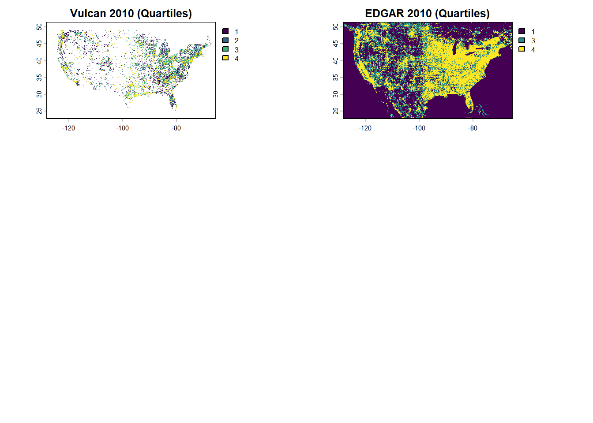
plot(vulcan_q[[2]], main = "Vulcan 2015 (Quartiles)")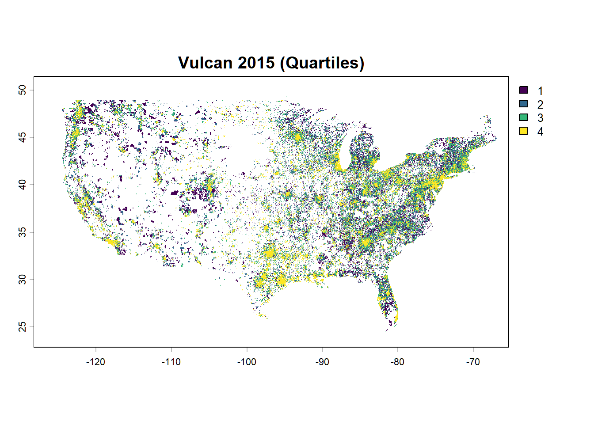
plot(edgar_q[[2]], main = "EDGAR 2015 (Quartiles)")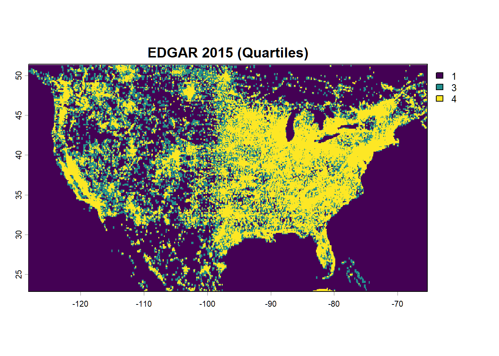
plot(vulcan_q[[3]], main = "Vulcan 2020 (Quartiles)")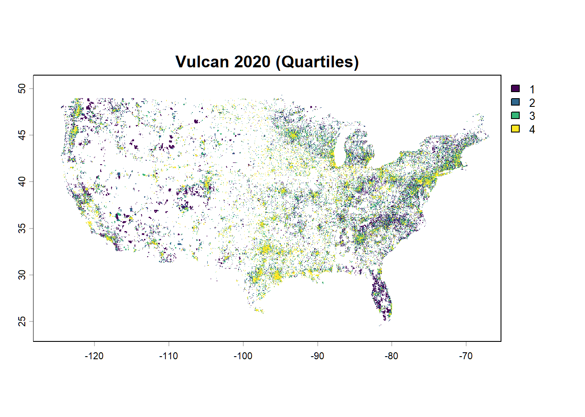
plot(edgar_q[[3]], main = "EDGAR 2020 (Quartiles)")These maps highlight differences in spatial resolution and emission distribution between datasets.
12.13.7 Dataset Differences (Vulcan − EDGAR)
years <- c(2010, 2015, 2020)
vulcan_sel <- vulcan_stack[[paste0("Vulcan_", years)]]
edgar_sel <- edgar_final[[paste0("EDGAR_", years)]]
diff_stack <- vulcan_sel - edgar_sel
|---------|---------|---------|---------|
=========================================
names(diff_stack) <- paste0("Diff_", years)plot_quartile_diff <- function(r, title) {
vals <- values(r)
vals <- vals[!is.na(vals)]
brks <- quantile(vals, probs = seq(0, 1, 0.25), na.rm = TRUE)
brks[1] <- min(vals, na.rm = TRUE)
brks[length(brks)] <- max(vals, na.rm = TRUE)
plot(
r,
breaks = brks,
col = hcl.colors(4, "RdBu"),
main = title
)
}12.13.7.1 Figure 2: National Difference Maps
plot_quartile_diff(diff_stack[["Diff_2010"]], "Vulcan − EDGAR (2010)")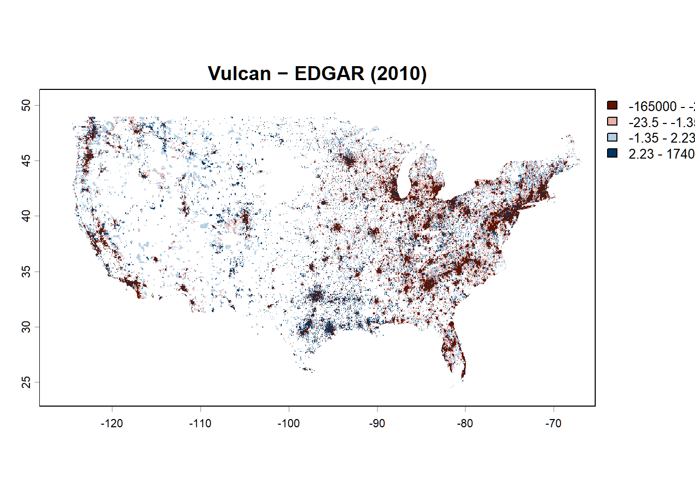
plot_quartile_diff(diff_stack[["Diff_2015"]], "Vulcan − EDGAR (2015)")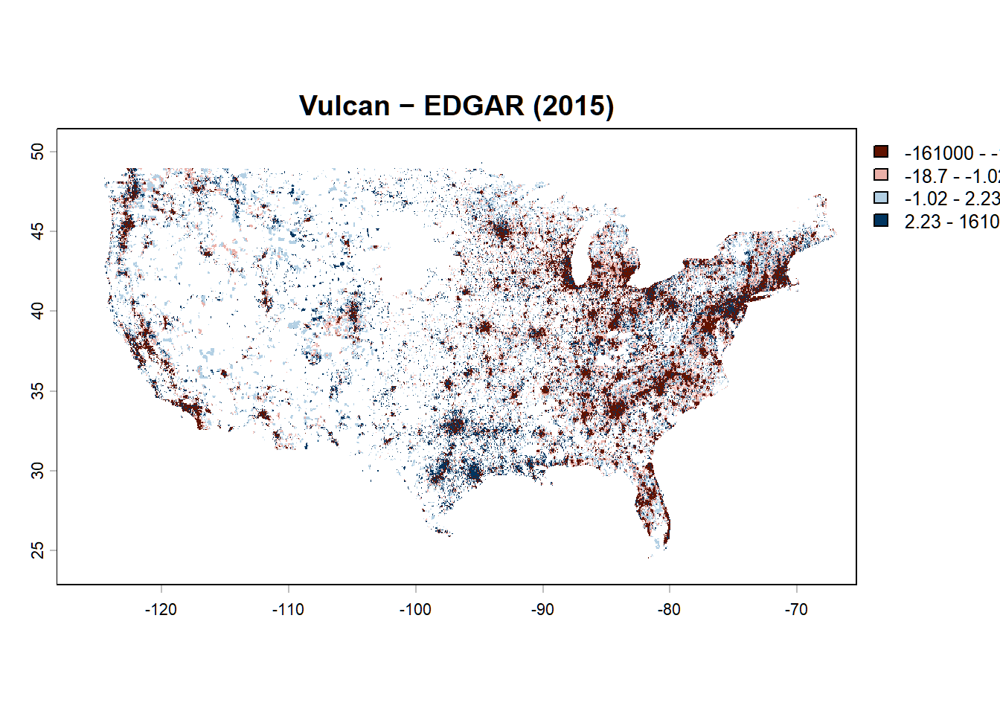
plot_quartile_diff(diff_stack[["Diff_2020"]], "Vulcan − EDGAR (2020)")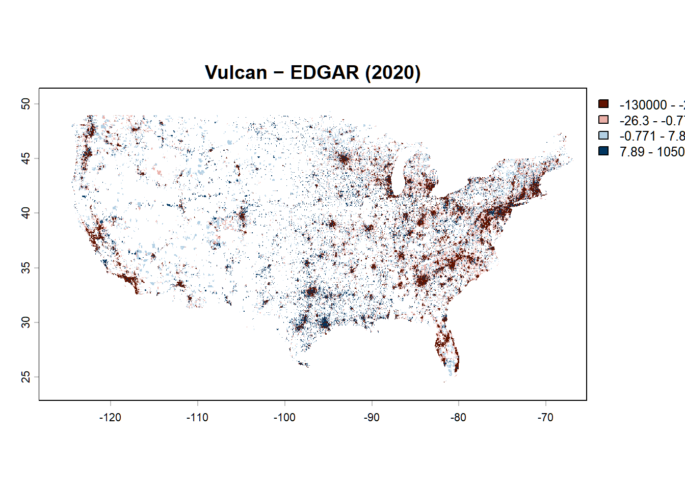
12.13.8 Regional Analysis: California
12.13.8.1 Load State Boundary
library(sf)
states <- tigris::states(cb = TRUE, year = 2020)
|
| | 0%
|
|= | 1%
|
|= | 2%
|
|== | 2%
|
|== | 3%
|
|=== | 4%
|
|=== | 5%
|
|==== | 5%
|
|==== | 6%
|
|===== | 7%
|
|====== | 8%
|
|====== | 9%
|
|======= | 9%
|
|======= | 10%
|
|======= | 11%
|
|======== | 11%
|
|======== | 12%
|
|========= | 12%
|
|========= | 13%
|
|========== | 14%
|
|========== | 15%
|
|=========== | 15%
|
|=========== | 16%
|
|============ | 17%
|
|============ | 18%
|
|============= | 18%
|
|============= | 19%
|
|============== | 19%
|
|============== | 20%
|
|=============== | 21%
|
|=============== | 22%
|
|================ | 22%
|
|================ | 23%
|
|================ | 24%
|
|================= | 24%
|
|================= | 25%
|
|================== | 25%
|
|================== | 26%
|
|=================== | 27%
|
|=================== | 28%
|
|==================== | 28%
|
|==================== | 29%
|
|===================== | 30%
|
|===================== | 31%
|
|====================== | 31%
|
|====================== | 32%
|
|======================= | 32%
|
|======================= | 33%
|
|======================== | 34%
|
|======================== | 35%
|
|========================= | 35%
|
|========================= | 36%
|
|========================== | 37%
|
|========================== | 38%
|
|=========================== | 38%
|
|=========================== | 39%
|
|============================ | 39%
|
|============================ | 40%
|
|============================= | 41%
|
|============================= | 42%
|
|============================== | 43%
|
|============================== | 44%
|
|=============================== | 44%
|
|=============================== | 45%
|
|================================ | 45%
|
|================================ | 46%
|
|================================= | 47%
|
|================================= | 48%
|
|================================== | 48%
|
|================================== | 49%
|
|=================================== | 49%
|
|=================================== | 50%
|
|==================================== | 51%
|
|==================================== | 52%
|
|===================================== | 52%
|
|===================================== | 53%
|
|===================================== | 54%
|
|====================================== | 54%
|
|====================================== | 55%
|
|======================================= | 55%
|
|======================================= | 56%
|
|======================================== | 57%
|
|======================================== | 58%
|
|========================================= | 58%
|
|========================================= | 59%
|
|========================================== | 60%
|
|=========================================== | 61%
|
|=========================================== | 62%
|
|============================================ | 62%
|
|============================================ | 63%
|
|============================================= | 64%
|
|============================================= | 65%
|
|============================================== | 65%
|
|============================================== | 66%
|
|=============================================== | 66%
|
|=============================================== | 67%
|
|================================================ | 68%
|
|================================================ | 69%
|
|================================================= | 70%
|
|================================================= | 71%
|
|================================================== | 71%
|
|================================================== | 72%
|
|=================================================== | 72%
|
|=================================================== | 73%
|
|==================================================== | 74%
|
|==================================================== | 75%
|
|===================================================== | 75%
|
|===================================================== | 76%
|
|====================================================== | 77%
|
|====================================================== | 78%
|
|======================================================= | 78%
|
|======================================================= | 79%
|
|======================================================== | 79%
|
|======================================================== | 80%
|
|========================================================= | 81%
|
|========================================================= | 82%
|
|========================================================== | 82%
|
|========================================================== | 83%
|
|========================================================== | 84%
|
|=========================================================== | 84%
|
|=========================================================== | 85%
|
|============================================================ | 85%
|
|============================================================ | 86%
|
|============================================================= | 87%
|
|============================================================= | 88%
|
|============================================================== | 88%
|
|============================================================== | 89%
|
|=============================================================== | 90%
|
|================================================================ | 91%
|
|================================================================ | 92%
|
|================================================================= | 92%
|
|================================================================= | 93%
|
|================================================================== | 94%
|
|================================================================== | 95%
|
|=================================================================== | 95%
|
|=================================================================== | 96%
|
|==================================================================== | 96%
|
|==================================================================== | 97%
|
|===================================================================== | 98%
|
|===================================================================== | 99%
|
|======================================================================| 100%ca <- states[states$NAME == "California", ]
ca <- st_transform(ca, crs(vulcan_stack))12.13.8.2 Crop and Mask
ca_vect <- vect(ca)
vulcan_ca <- crop(vulcan_stack, ca_vect)
vulcan_ca <- mask(vulcan_ca, ca_vect)
edgar_ca <- crop(edgar_final, ca_vect)
edgar_ca <- mask(edgar_ca, ca_vect)12.13.9 California Emissions Comparison
plot_quartile <- function(r, title) {
vals <- values(r)
vals <- vals[!is.na(vals)]
brks <- quantile(vals, probs = seq(0, 1, 0.25), na.rm = TRUE)
brks[1] <- min(vals, na.rm = TRUE)
brks[length(brks)] <- max(vals, na.rm = TRUE)
plot(
r,
breaks = brks,
col = hcl.colors(4, "YlOrRd"),
main = title
)
}12.13.9.1 Figure 3: California Emissions Maps
years <- c(2010, 2015, 2020)
par(mfrow = c(3,2), mar = c(3,3,2,2))
for (yr in years) {
plot_quartile(
vulcan_ca[[paste0("Vulcan_", yr)]],
paste("Vulcan CA", yr)
)
plot_quartile(
edgar_ca[[paste0("EDGAR_", yr)]],
paste("EDGAR CA", yr)
)
}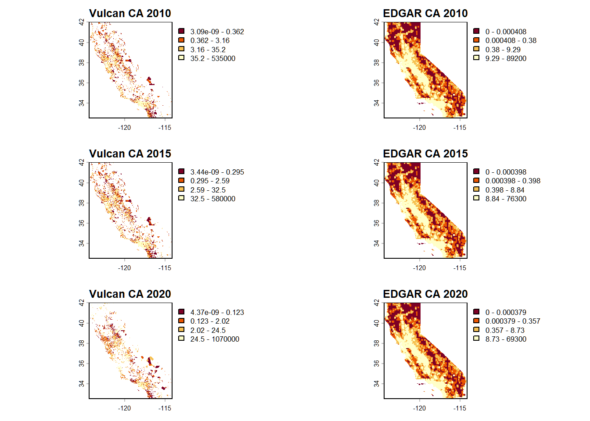
12.13.10 California Difference Analysis
vulcan_ca_sel <- vulcan_ca[[paste0("Vulcan_", years)]]
edgar_ca_sel <- edgar_ca[[paste0("EDGAR_", years)]]
ca_diff_stack <- vulcan_ca_sel - edgar_ca_sel
names(ca_diff_stack) <- paste0("CA_Diff_", years)12.13.10.1 Figure 4: California Difference Maps
plot_quartile_diff(ca_diff_stack[["CA_Diff_2010"]], "California: Vulcan − EDGAR (2010)")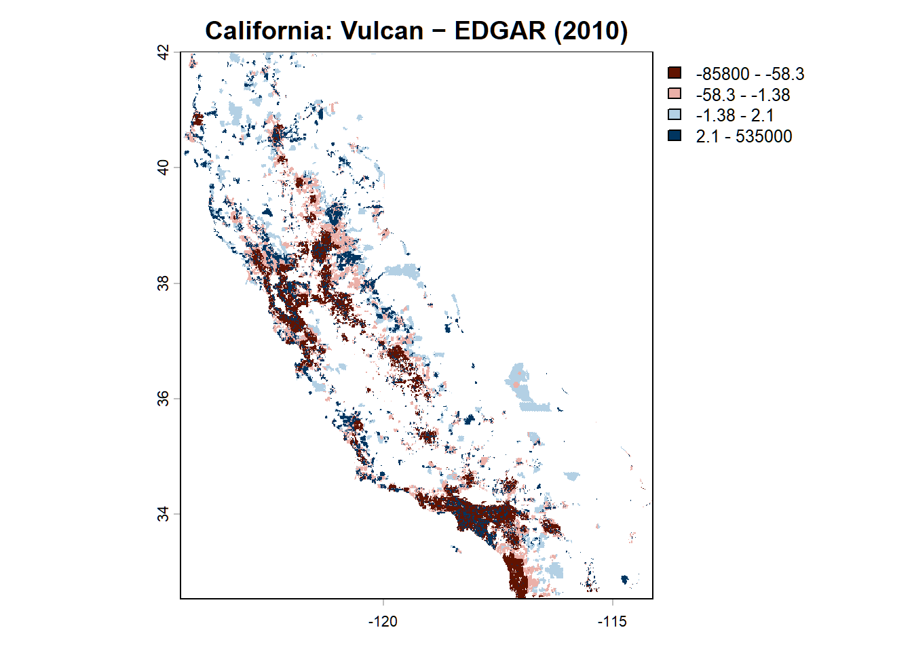
plot_quartile_diff(ca_diff_stack[["CA_Diff_2015"]], "California: Vulcan − EDGAR (2015)")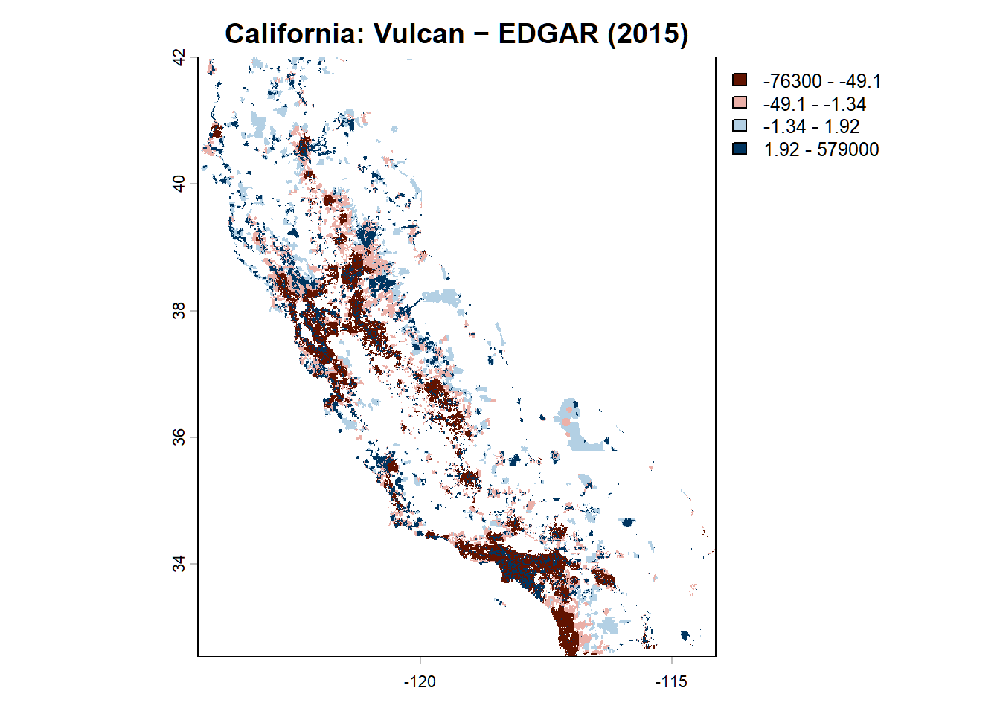
plot_quartile_diff(ca_diff_stack[["CA_Diff_2020"]], "California: Vulcan − EDGAR (2020)")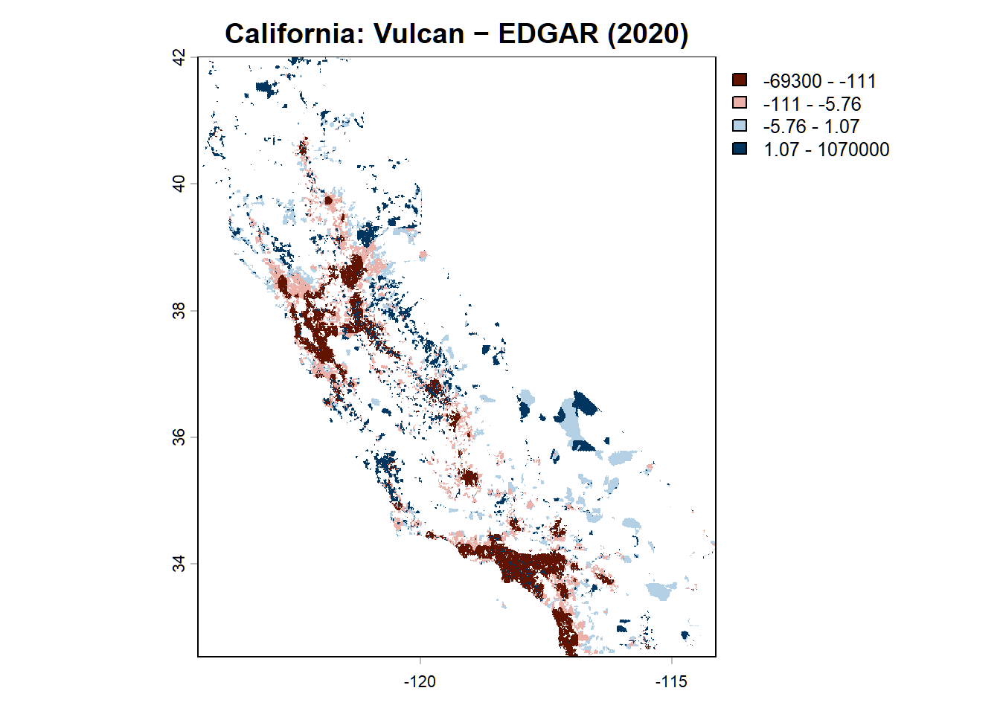
12.13.11 Temporal Trends in Emissions
years <- 2010:2020
vulcan_total <- numeric(length(years))
edgar_total <- numeric(length(years))
for (i in seq_along(years)) {
yr <- years[i]
v_layer <- vulcan_ca[[paste0("Vulcan_", yr)]]
vulcan_total[i] <- global(v_layer, "sum", na.rm = TRUE)[1,1]
e_layer <- edgar_ca[[paste0("EDGAR_", yr)]]
edgar_total[i] <- global(e_layer, "sum", na.rm = TRUE)[1,1]
}df_total <- data.frame(
Year = rep(2010:2020, 2),
Emissions = c(vulcan_total, edgar_total),
Dataset = rep(c("Vulcan", "EDGAR"), each = length(vulcan_total))
)12.13.11.1 Figure 5: California Emissions Time Series
ggplot(df_total, aes(x = Year, y = Emissions, color = Dataset)) +
geom_line(linewidth = 1) +
geom_point(size = 2) +
labs(
title = "California Industrial CO₂ Emissions (2010–2020)",
x = "Year",
y = "Total Emissions",
color = "Dataset"
) +
theme_minimal(base_size = 14)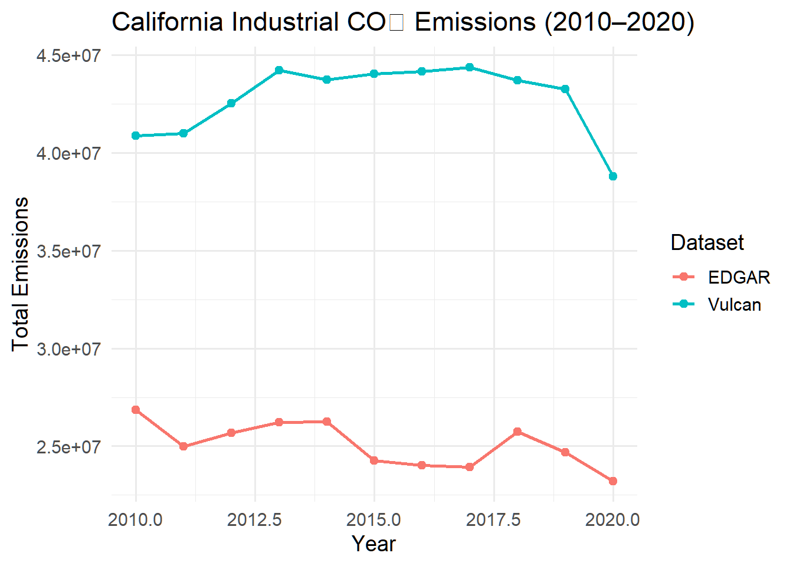
13 Coding Lab: Exploring High-Resolution Emissions Data
This lab guides students through loading, comparing, and interpreting fossil fuel CO₂ emissions from the Vulcan and EDGAR datasets.
13.1 Loading and Exploring Emissions Data
- Load the Vulcan and EDGAR datasets using the provided code.
- Inspect the structure of each dataset:
- What is the spatial resolution of each dataset?
- What are the units of each dataset?
- Compare the spatial extent:
- Why does EDGAR require cropping to match Vulcan?
13.2 Spatial Comparison of Emissions (City & Sector)
In this exercise, you will compare CO₂ emissions from Vulcan and EDGAR for a city and sector of your choice.
13.2.1 Step 1: Choose a City and Sector
- Pick one city either boundary/ citycenter point.
- Pick one sector that is identical in both vulcan and edgar
13.2.2 Step 2: Select Two Years
Choose two years to compare (e.g., 2010 and 2020).
13.2.3 Step 3: Create Maps
Using the provided code: 1. Zoom in on your selected city. 2. Visualize maps / line charts
13.2.4 Step 4: Answer the Questions
- Do Vulcan and EDGAR look similar or different?
- Briefly describe one similarity and one difference
- Why might they be different? (choose at least one)
- Different spatial resolution
- Different data sources
- Different methods
- Did emissions change over time?
- Did both datasets show the same trend?
13.3 Conceptual Questions
- Why are bottom-up approaches (like Vulcan) important for emissions estimation?
- What are the advantages and disadvantages of:
- High-resolution datasets (Vulcan)
- Coarse global datasets (EDGAR)
- Explain the difference between:
- Point sources
- Nonpoint sources
- Why is temporal downscaling necessary in emissions modeling?
- How might spatial resolution influence:
- Policy decisions?
- Urban planning?
13.4 Applied Mini Project (Guided)
Choose one of the following analyses:
13.4.1 Option A: Urban Emissions Analysis
- Select a major U.S. city
- Compare Vulcan and EDGAR emissions spatially and temporally
- Identify emission hotspots
13.4.2 Option B: State-Level Comparison
- Compare emissions across two states
- Analyze spatial distribution and total emissions
13.4.3 Option C: Dataset Sensitivity Analysis
- Compare Vulcan vs EDGAR across multiple locations
- Evaluate how dataset choice affects interpretation
13.4.4 Deliverables
- 1–2 figures (maps or plots)
- Short written interpretation (½–1 page)
13.5 Conclusion
This chapter introduced students to high-resolution carbon emissions data using the Vulcan dataset and a complementary EDGAR comparison. Through data loading, unit harmonization, sector analysis, spatial mapping, and regional interpretation, students gained experience working with real emissions products and learned how dataset structure, spatial scale, and sector definitions shape the conclusions that can be drawn from carbon emissions analyses.